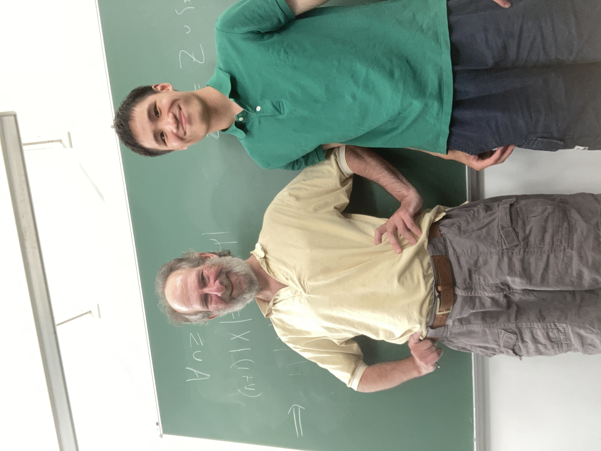
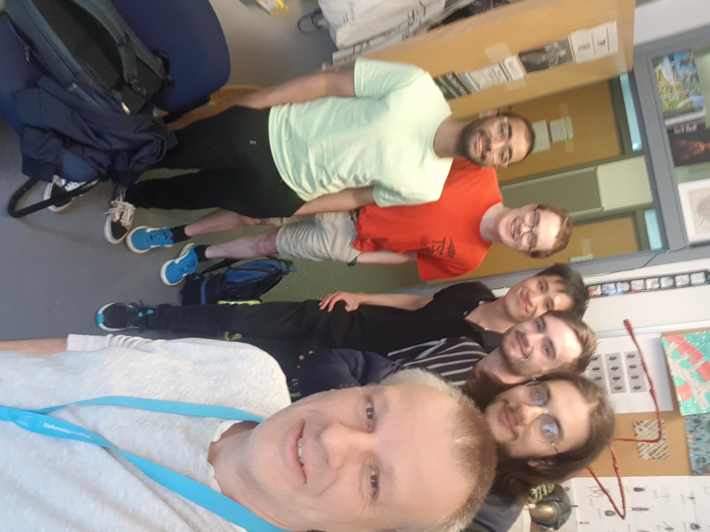
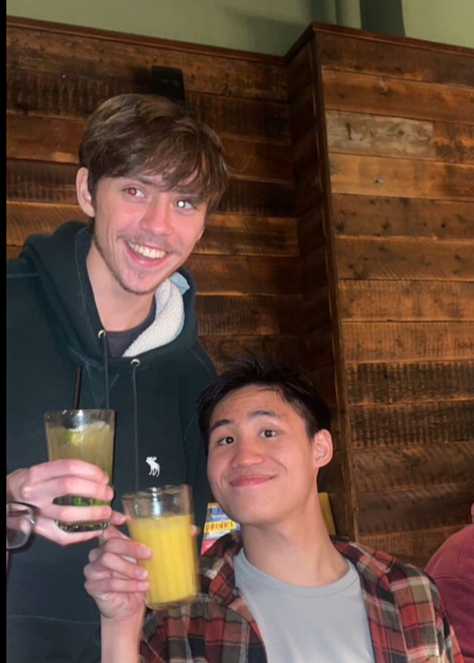
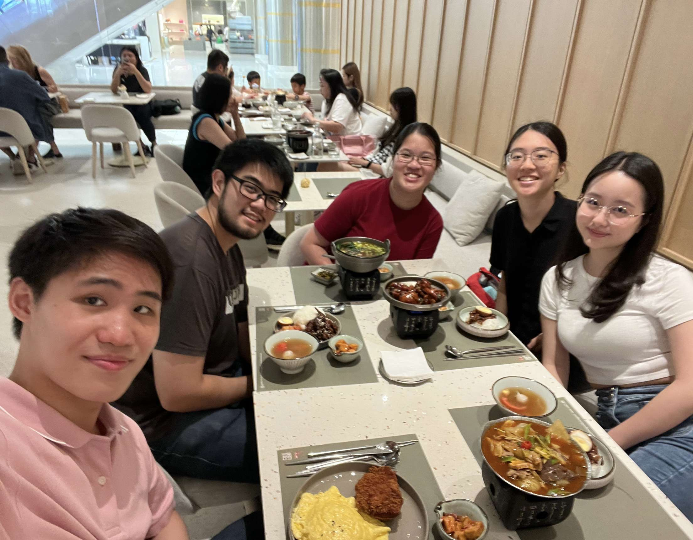

People
In life, people come and people go. As I learned in my category theory courses, your relationship to the people around you matters a lot more than your own personal story. For just a brief moment, let us let the sentiments (and cringe) take over.
It would not be feasible to have a comprehensive list of everyone who has significantly impacted my life, nor would it be appropriate to list my many close friends and family members. For the sake of keeping this somewhat professional, this page is a list, in backwards chronological order of the first time I met them, of people who played an influential role in my life from a personal and professional point of view. And this list is most definitely incomplete.
[No Photo]

Me with Dr Adam Epstein
(August 2024)

My undergraduate tutorial group with Dr David Wood
(June 2024)

Me with Oscar Duran
(October 2022)
Me with Oscar Duran
(November 2022)

(From left to right) Me, Joshua Thor, Clarynnsia Lai, Eunice Tan, and Nadine Loh
(September 2023)

Me with Dr Hina Khan
(July 2020)